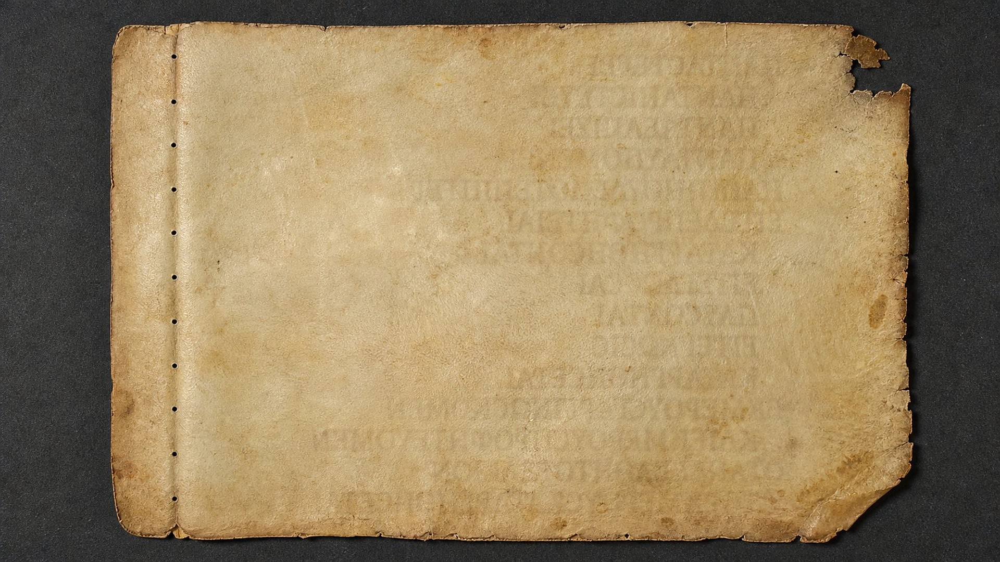
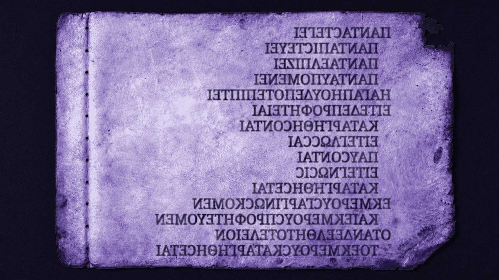

Paris
22 feuillets
Bibliothèque nationale de France (fonds Coislin 202)
Le plus grand ensemble : c'est lui qui a donné au manuscrit son autre nom, « Coislinianus ».
VIᵉ siècle · restitué en 2026
42 pages perdues des Lettres de Paul restituées par imagerie multispectrale (Université de Glasgow, avril 2026).
Une équipe internationale dirigée par le professeur Garrick Allen (Université de Glasgow) a restitué 42 pages perdues de l'un des plus importants manuscrits anciens des lettres de Paul.
Au VIe siècle, un scribe copie les lettres de l'apôtre Paul en grandes lettres onciales (majuscules), disposées en lignes de sens pour guider la lecture à voix haute. Le manuscrit est accompagné de l'apparat euthalien : prologues, listes de chapitres et de citations qui aident le lecteur à s'orienter.
Au XIIIe siècle, au monastère de la Grande Laure, sur le mont Athos, le livre usé est démonté. Son texte avait été repassé à l'encre ; ses feuilles deviennent reliures et pages de garde d'autres volumes. Les feuillets survivants sont aujourd'hui dispersés entre la France, la Grèce, l'Italie, la Russie et l'Ukraine.
En combinant imagerie multispectrale et datation au radiocarbone (réalisée à Paris, elle confirme le VIe siècle), les chercheurs ont récupéré du texte qui n'existe plus physiquement : des « pages fantômes ».
L'équipe et ses partenaires
Faites glisser le curseur : à gauche, le feuillet tel que le voit l'œil nu ; à droite, le même feuillet après traitement. Le texte apparaît… à l'envers, car c'est une empreinte en miroir.


Image de gauche : bande de lumière (simulation)
Texte révélé (démonstration)
ΠΑΝΤΑ ϹΤΕΓΕΙ · ΠΑΝΤΑ ΠΙϹΤΕΥΕΙ · ΠΑΝΤΑ ΕΛΠΙΖΕΙ · ΠΑΝΤΑ ΥΠΟΜΕΝΕΙ · Η ΑΓΑΠΗ ΟΥΔΕΠΟΤΕ ΠΙΠΤΕΙ…
« Il excuse tout, il croit tout, il espère tout, il endure tout. L'amour ne disparaît jamais… » (1 Corinthiens 13:7-8)
Simulation Pour illustrer le principe, nous avons reproduit en onciales et en lignes de sens le passage de 1 Corinthiens 13:7-10, dans un feuillet photographié pour l'occasion. Ce n'est pas une page réelle du Codex H : les vraies images se consultent sur l'édition numérique de Glasgow.

Au Moyen Âge, les lettres effacées par l'usage sont recouvertes d'une encre nouvelle.
Ses composés chimiques laissent sur la page en vis-à-vis une image en miroir du texte, parfois sur plusieurs feuillets d'épaisseur. C'est l'effet d'offset.
L'imagerie multispectrale photographie la page sous des bandes de lumière étroites, de l'ultraviolet à l'infrarouge. Chaque bande révèle des traces différentes.
Des calculs statistiques combinent les images pour isoler l'empreinte. On la retourne : le texte fantôme devient lisible. Chaque page physique peut ainsi livrer plusieurs pages de texte.
Une datation au radiocarbone du parchemin, réalisée à Paris, confirme l'origine au VIe siècle.
Depuis l'Athos, les feuillets ont voyagé jusqu'à cinq pays. Touchez une ville pour savoir ce qu'elle conserve. La taille des cercles est proportionnelle au nombre de feuillets.
Paris
Bibliothèque nationale de France (fonds Coislin 202)
Le plus grand ensemble : c'est lui qui a donné au manuscrit son autre nom, « Coislinianus ».
Mont Athos
Monastère de la Grande Laure
Le lieu où le codex fut démonté au XIIIᵉ siècle. La communauté a ouvert ses feuillets aux chercheurs pour les imager à plusieurs reprises.
Turin
Bibliothèque nationale universitaire de Turin
Deux feuillets, abîmés lors de l'incendie de la bibliothèque en 1904. La bibliothèque est partenaire du projet.
Kyiv
Bibliothèque nationale d'Ukraine Vernadsky
Trois feuillets conservés en Ukraine.
Moscou
Collections russes
Trois feuillets conservés à Moscou.
Saint-Pétersbourg
Bibliothèque nationale de Russie
Trois feuillets conservés à Saint-Pétersbourg.
Glasgow
Université de Glasgow · avec l'Université de Groningue, l'Early Manuscripts Electronic Library (EMEL) et le laboratoire des manuscrits de l'Université d'Athènes
C'est ici qu'est dirigé le projet du professeur Garrick Allen, qui a rassemblé virtuellement les feuillets dispersés et leurs pages fantômes.
Les pages retrouvées contiennent les lettres de Paul déjà connues.
Il ne s'agit ni d'un écrit inédit ni d'un « évangile perdu ». Le texte restitué est celui que transmettent aussi des milliers d'autres manuscrits du Nouveau Testament. La découverte ne modifie pas la Bible : elle ajoute un témoin ancien de plus, qui concorde avec les autres.
Les pages contiennent les plus anciens exemples connus de listes de chapitres pour les lettres de Paul, très différentes de nos divisions actuelles (qui datent du XIIIe siècle).
Corrections, annotations, aides à la lecture : les fragments montrent comment les copistes du VIe siècle vérifiaient et commentaient le texte sacré.
L'état du manuscrit raconte comment les livres usés étaient démontés et réemployés, au lieu d'être détruits, ce qui en a sauvé des fragments.
Au sixième siècle, un scribe copie avec soin les lettres de l'apôtre Paul, en grandes lettres onciales, disposées en lignes de sens pour faciliter la lecture à voix haute. Ce manuscrit, les spécialistes l'appellent aujourd'hui le Codex H. Au treizième siècle, au monastère de la Grande Laure, sur le mont Athos, le livre usé est démonté. Son texte avait été repassé à l'encre ; ses feuilles servent désormais de reliure et de pages de garde pour d'autres volumes. Dispersées, les feuilles survivantes se trouvent aujourd'hui en France, en Grèce, en Italie, en Russie et en Ukraine.
C'est cette encre qui a trahi le secret. Ses composés chimiques ont laissé, sur les pages en vis-à-vis, une empreinte en miroir du texte, parfois sur plusieurs feuillets d'épaisseur. Presque invisible à l'œil nu, ce texte fantôme apparaît clairement sous l'imagerie multispectrale. L'équipe internationale dirigée par le professeur Garrick Allen, de l'Université de Glasgow, a ainsi récupéré quarante-deux pages perdues, annoncées le 24 avril 2026, et une datation au radiocarbone, réalisée à Paris, a confirmé le sixième siècle. Le texte retrouvé est celui des lettres de Paul que nous connaissons déjà. La découverte ne change pas la Bible : elle la confirme, et révèle comment des mains anciennes lisaient, corrigeaient et annotaient les Écritures.
Évangile de Thomas, Livre d'Hénoch, Pasteur d'Hermas… La salle suivante présente ces textes anciens, clairement signalés comme apocryphes, et explique pourquoi ils n'ont pas été retenus.
Salle 06 · Les écrits apocryphes